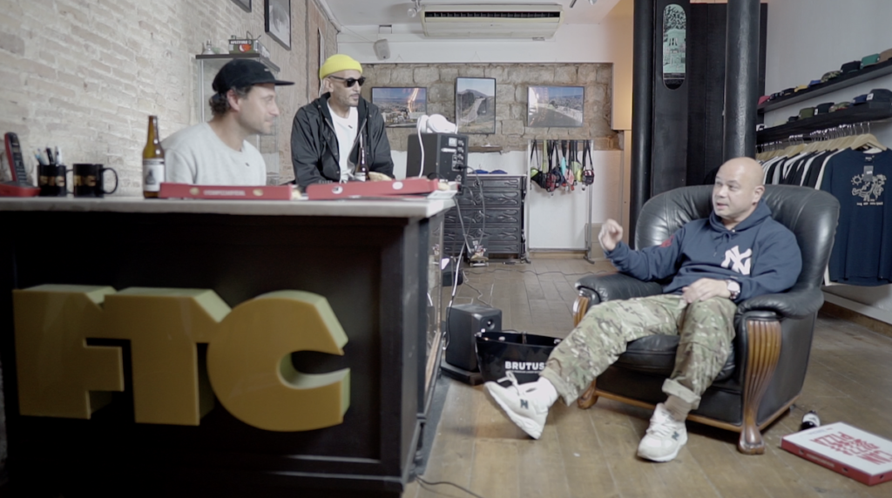
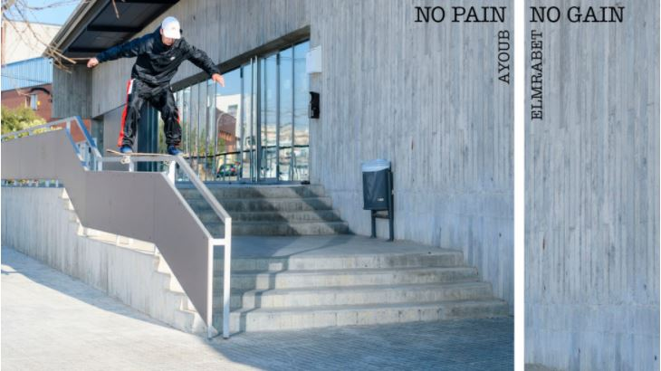
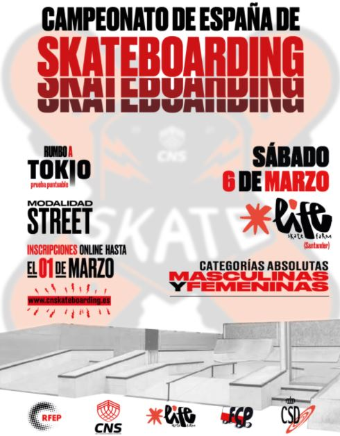

El cámara profesional Antony Claravall habla sobre su experiencia en Barcelona.

Este neoyorquino tiene muchos viajes a sus espaldas y es el responsable de capturar con su cámara muchas imágenes que se han convertido en míticas.
Fue uno de los principales filmers de proyectos como 411VM, The Firm, éS o Habitat y, por qué no decirlo, también uno de los responsables de que
Barcelona tenga la notoriedad de la que hoy goza en el mundo del skateboarding.
Anthony Claravall ha sido el primer invitado a las Pizza Nights en FTC Barcelona, una nueva sección que nos llega con el sello de Macba Life
a través del canal de Transworld Skateboarding. A través de las preguntas de Álex Braza y Mucho Muchacho, vas a poder conocer de primera mano
la historia de por qué Nomad Skateboards puso su nombre en una tabla o cómo fue el paso de Arto Saari por BCN. Habla sobre Raúl Retamal,
Javi Sarmiento, Raúl Navarro y, entre otras muchas cosas, sobre el proyecto en el que va a recopilar las varias décadas que lleva tras la cámara.
Nomad introduce en su equipo oficialmente
a Jorge de Torres con este clip.
La familia de Nomad Skateboards crece con una nueva adhesión al flow team. Se llama
Jorge de Torres, es de Zaragoza y se presenta oficialmente con un clip filmado por
Marcos Lozano y editado por Iván Callejero.
No Pain No Gain.
Estreno de la nueva parte completa de Ayoub Elmrabet

Hoy te invitamos al estreno de No Pain No Gain, la nueva parte completa del skater
catalán Ayoub Elmrabet. Tras las tareas de edición ha estado Sergio Guzmán y vas a poder
ver un montaje en el que Ayoub alterna patín técnico con una buena dosis de barandillas,
gaps y escaleras. Dale al play y disfruta de su skateboarding.
Kilian Martín lanza Dance of The Trees desde Birmania
El skater madrileño Kilian Martín viajó a Birmania justo antes de la pandemia mundial
y de que el país sufriese la ocupación militar. Lo hizo junto a Brett Novak, su filmer
de cabecera, y se trajeron un montaje tan estético e inusual como de costumbre.
Participa en el Campeonato de
España de Skateboarding

Ya hay lugar y fecha para la prueba de «street» del Campeonato de España de Skateboarding.
Habrá categorías absolutas femenina y masculina, la cita será en Santander y el evento tendrá lugar
en las instalaciones de Life Skatefarm el próximo 6 de marzo.
Esta prueba será la única cita de 2021 en esta categoría y ya nos dará una campeona y un campeón de
España de Skateboarding. Como de costumbre, será puntuable para los Juegos Olímpicos de Tokio y
podrás ver en directo tanto las finales como las semifinales a través de FEPTV.